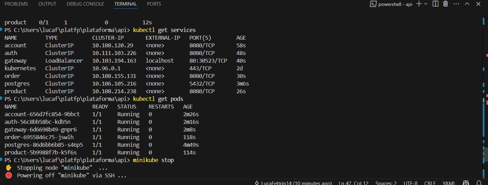

Setup Local com Kubernetes (Minikube ou Kind)¶
Overview¶
Esta seção descreve como configurar um ambiente local utilizando Kubernetes com Minikube ou Kind, com o objetivo de hospedar todos os microserviços da aplicação em um único cluster local.
Cada microserviço deve ser implantado com recursos específicos do Kubernetes, definidos em arquivos k8s.yaml. Esses arquivos devem incluir configurações de Secrets, ConfigMaps, Deployments e Services, garantindo que cada serviço funcione corretamente dentro do cluster.
‚öôÔ∏è Pr√©-requisitos¶
Antes de iniciar, verifique se possui:
- ✅ Minikube ou Kind instalados.
- ✅ Docker instalado e acessível no terminal.
- ✅ Acesso ao terminal com permissões administrativas (root/sudo).
- ✅ Diretório do projeto organizado com arquivos
k8s.yamlpara cada serviço.
Alternativamente, você pode usar o Kubernetes integrado ao Docker Desktop (com suporte habilitado).
üóÇ Estrutura Esperada do Projeto¶
A estrutura recomendada para organizar os manifests de cada microserviço:
api/
├── account-service/
│ └── k8s/
│ └── k8s.yaml
├── auth-service/
│ └── k8s/
│ └── k8s.yaml
├── gateway-service/
│ └── k8s/
│ └── k8s.yaml
├── product-service/
│ └── k8s/
│ └── k8s.yaml
└── order-service/
└── k8s/
└── k8s.yaml
Cada arquivo k8s.yaml pode conter múltiplos recursos definidos sequencialmente.
üìÑ Recursos Kubernetes por Servi√ßo¶
Cada k8s.yaml deve incluir obrigatoriamente:
Secret: Armazena tokens, senhas e variáveis sensíveis.ConfigMap: Define variáveis de ambiente, configurações não sensíveis.Deployment: Controla o rollout e a gestão dos pods.Service: Expõe o serviço internamente no cluster (ClusterIP ou NodePort).
Para ambientes locais, o uso de
NodePortfacilita testes manuais via navegador ou API clients.
üöÄ Comandos Essenciais¶
Inicializar o cluster¶
minikube start
Ou, caso esteja usando o Kind:
kind create cluster --name my-cluster
Aplicar os manifests de todos os servi√ßos¶
kubectl apply -f account-service/k8s/k8s.yaml
kubectl apply -f auth-service/k8s/k8s.yaml
kubectl apply -f gateway-service/k8s/k8s.yaml
kubectl apply -f product-service/k8s/k8s.yaml
kubectl apply -f order-service/k8s/k8s.yaml
Verificar status dos recursos¶
kubectl get pods
kubectl get svc
kubectl get deployments
✅ Valida√ß√£o¶
Para garantir que todos os serviços estão rodando no cluster local:
Verifique o contexto ativo:
kubectl config current-context
Liste os pods e serviços:
kubectl get pods
kubectl get services
Verifique se todos os pods estão com STATUS = Running.

‚òÅÔ∏è Alternativa: Deploy em Nuvem¶
Se preferir utilizar um cluster em nuvem, as opções populares são:
- Amazon EKS
- Google Kubernetes Engine (GKE)
- Azure Kubernetes Service (AKS)
Os mesmos k8s.yaml utilizados localmente podem ser reaproveitados. É necessário apenas adaptar configurações específicas, como StorageClass, Ingress e variáveis de ambiente.